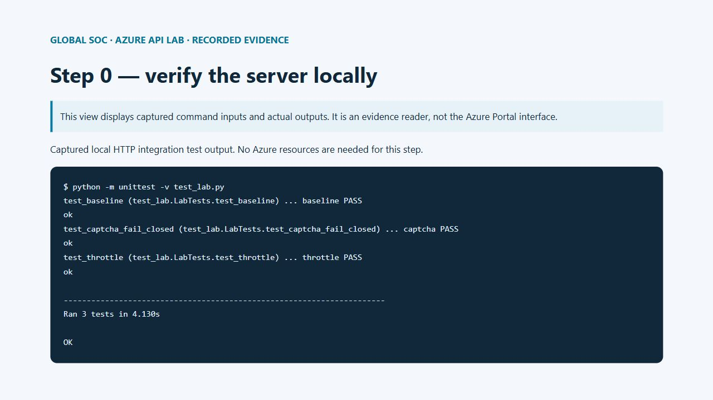
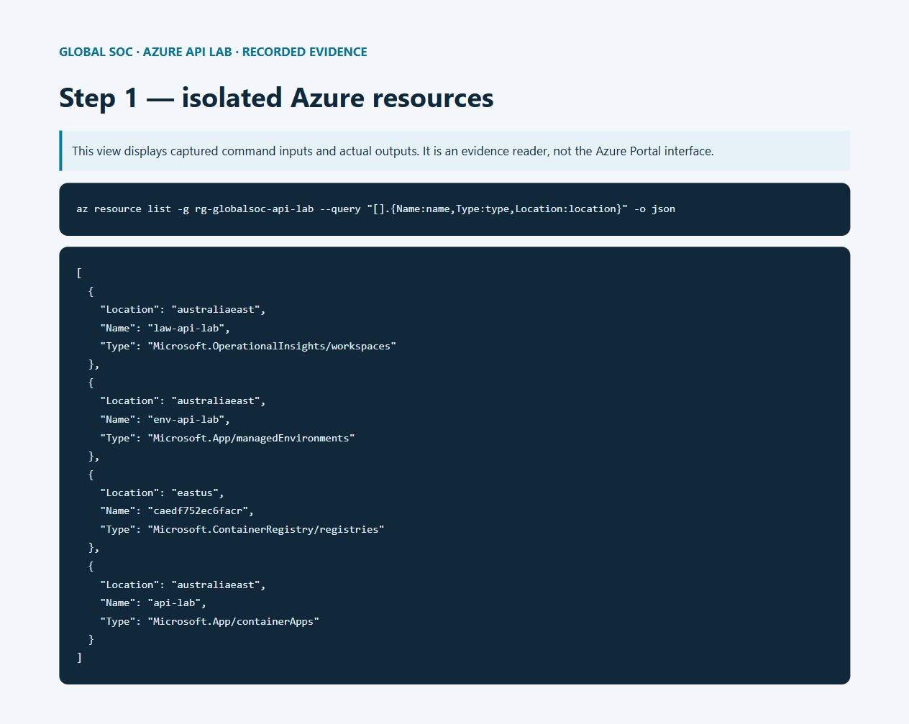
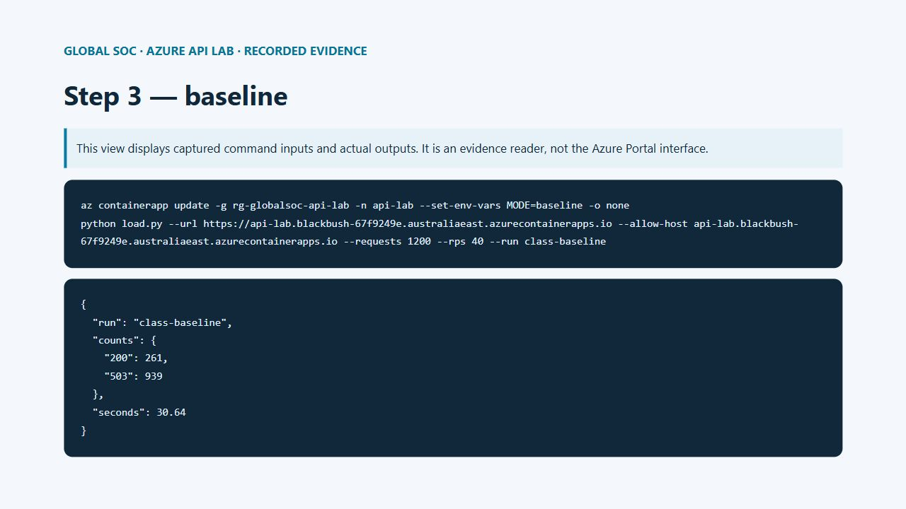
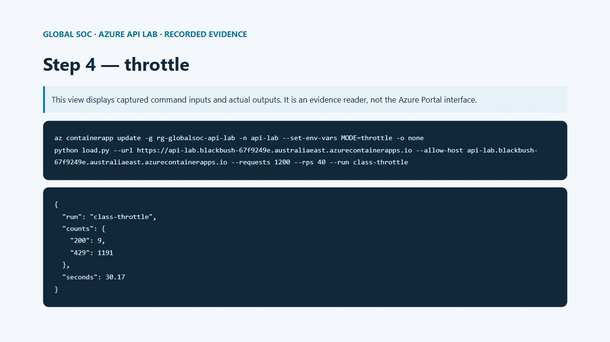
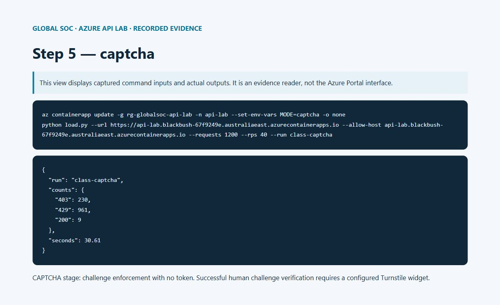
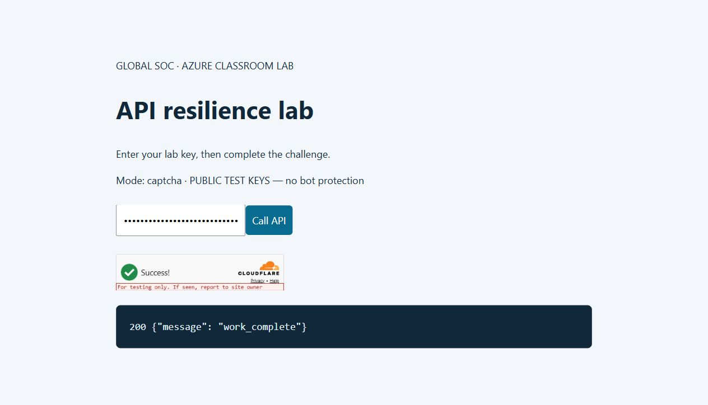
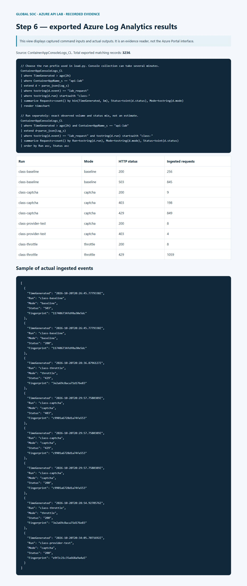

HANDS-ON AZURE SECURITY · Yogesh · 21 October 2026
From HTTP 503 to rate limits and CAPTCHA
A practical Azure API resilience lab, with complete code, test commands, inputs, outputs, screenshots and cleanup.
What you will build
Build a temporary Azure REST API, send a fixed budget of classroom requests, observe HTTP 503, then add HTTP 429 throttling and a browser fingerprint that triggers a CAPTCHA. Export the evidence from Log Analytics and delete the whole lab resource group.
The 503 is a deliberate application capacity limit: four concurrent work slots, each held for 250 ms. It demonstrates overload handling without exhausting Azure or disrupting globalsoc.com.au. A 503 here does not prove an Azure platform outage. The API runs on its own Azure hostname; the blog remains on globalsoc.com.au.
This is a single-process teaching server with one replica. It is not a production web stack. Its in-memory counters reset on restart. Production deployments need a supported web server, edge protection, distributed counters, trusted proxy handling, and an authenticated account quota.
1. Prerequisites and a clean folder
Use PowerShell 7, Python 3.12+, Azure CLI, and an Azure subscription with permission to create resource groups, Log Analytics, Container Apps, and Container Registry. No local Docker daemon is required for the Azure source build. These resources can incur charges; deleting the group at the end stops the lab resources, but does not reverse costs already incurred.
Save the complete files printed below into one empty folder. Keep generated secrets out of version control, screenshots, and transcripts. Do not run a load exercise against another site or a production route.
Download the complete student lab ZIP · Download the KQL queries. Extract the ZIP and open PowerShell in that folder before running the commands.
az login
az account list --query "[].{Name:name,Id:id}" -o table
az extension add --name containerapp --upgrade --yes
$env:LAB_KEY = [Convert]::ToHexString([Security.Cryptography.RandomNumberGenerator]::GetBytes(32))
$env:FP_SECRET = [Convert]::ToHexString([Security.Cryptography.RandomNumberGenerator]::GetBytes(32))
python -m unittest -v test_lab.py
./deploy.ps1 -Subscription '<YOUR-SUBSCRIPTION-ID>'

Local integration tests: baseline capacity, throttling, and CAPTCHA failure behavior — click to view the full screenshot.A bounded instruction for your AI lab assistant
If you delegate the exercise to an AI assistant, give it the resource boundary and the exact stop condition. Replace the placeholders with the endpoint you just deployed; keep your lab key in the environment rather than pasting it into chat.
Use only my isolated Azure lab endpoint https://<YOUR-LAB-HOST>.
Run load.py with --allow-host <YOUR-LAB-HOST>, --requests 1200,
--rps 40, and run ID class-baseline. Record the JSON result.
Stop after the fixed request budget. Do not increase the budget or target another host.
Repeat the same budget after I enable throttle, then captcha mode.
Export matching Log Analytics events, capture the outputs, and delete only
the resource group rg-globalsoc-api-lab after the evidence is saved.
Expected deployment output
The final line is a hostname such as api-lab.<environment>.<region>.azurecontainerapps.io. Use your own returned value, including https://, for every command below. Do not copy a hostname from a screenshot: the demonstrated resource group is deleted after the exercise.
The environment sends stdout JSON to its connected Log Analytics workspace. Each API response records event, status, mode, run, and a pseudonymous fingerprint. We do not log raw IP addresses, browser headers, the lab key, CAPTCHA tokens, or CAPTCHA secrets.
First-use provider registration and environment creation can take several minutes. Let an active deployment finish before retrying. The recorded app and workspace are in Australia East; the source-build registry was automatically created in East US. Review resource locations in your own inventory if your class has residency requirements.
The screenshots display recorded command inputs, outputs, and exported Azure data in an evidence reader. Native Portal sign-in timed out during this session. Portal navigation and query instructions are included in the text so you can inspect the workspace in your own lab.
$rg = 'rg-globalsoc-api-lab'
$hostName = az containerapp show -g $rg -n api-lab --query properties.configuration.ingress.fqdn -o tsv
$base = "https://$hostName"
Invoke-RestMethod "$base/health"
# Expected: healthy = True

Azure resources created for the isolated classroom lab — click to view the full screenshot.2. Call the API once and inspect its response
The homepage sets a signed, HttpOnly browser identity cookie. Fetch it before calling the API. Requests without the lab key return 401; requests without a valid cookie return 400. Keep the same WebSession when testing identity-based behavior.
Invoke-WebRequest "$base/" -SessionVariable session | Out-Null
$headers = @{'X-Lab-Key'=$env:LAB_KEY; 'X-Lab-Run'='class-manual'}
$r = Invoke-WebRequest "$base/api/work" -WebSession $session -Headers $headers -SkipHttpErrorCheck
$r.StatusCode
$r.Content
# Expected: 200
# {"message": "work_complete"}
| HTTP status | Meaning in this lab | JSON body |
|---|
| 200 | Work accepted | {"message": "work_complete"} |
| 503 | Four work slots already occupied | {"error": "simulated_capacity_exceeded"} |
| 429 | Per-browser quota exceeded | {"error": "client_rate_limit"} |
| 429 | Global quota exceeded | {"error": "global_rate_limit"} |
| 403 | Challenge token required | {"error": "captcha_required"} |
| 403 | Challenge verification rejected | {"error": "captcha_failed"} |
| 401 | Missing or incorrect lab key | {"error": "lab_key_required"} |
| 400 | Missing or invalid signed identity | {"error": "open_homepage_first"} |
3. Baseline: send 1,200 bounded requests
The load script uses 12 threads, at most 40 scheduled requests per second, and a hard maximum of 2,000 requests per invocation. It uses a single shared identity. The commands below schedule 40 requests per second, with a minimum duration of about 30 seconds. Connection latency can reduce the actual rate. It never retries failures. Ctrl+C stops the client; already accepted work may finish.
This deliberately tests rejected requests. The API returns Retry-After, but this test client only counts statuses and does not retry. A real client should respect Retry-After and use bounded backoff with jitter. No AI agent should decide to keep increasing traffic until an unrelated service fails.
az containerapp update -g $rg -n api-lab --set-env-vars MODE=baseline -o none
# Wait for the new revision to be ready, then run:
python load.py --url $base --allow-host $hostName --requests 1200 --rps 40 --run class-baseline
Read the baseline result
Expect some 200 responses and some 503 responses with simulated_capacity_exceeded. The exact mix varies with network scheduling. Check the sum of the reported counts: it must equal 1,200. network_error means a transport failure, not HTTP 503. A result containing only 401 or 400 means setup failed; fix the key or cookie before proceeding.

Baseline command and captured HTTP status counts — click to view the full screenshot.Recorded input and output from our Azure run
az containerapp update -g rg-globalsoc-api-lab -n api-lab --set-env-vars MODE=baseline -o none
python load.py --url https://api-lab.blackbush-67f9249e.australiaeast.azurecontainerapps.io --allow-host api-lab.blackbush-67f9249e.australiaeast.azurecontainerapps.io --requests 1200 --rps 40 --run class-baseline
{
"run": "class-baseline",
"counts": {
"200": 261,
"503": 939
},
"seconds": 30.64
}
4. Enable throttling and repeat the same load
MODE=throttle applies a global limit of eight requests per second before the work queue, plus three requests per identity per ten seconds. The API returns 429 and Retry-After. The global limit protects the lab even if a visitor clears cookies. Because the runner represents one identity, most repeated calls should now be rejected before they acquire a work slot.
az containerapp update -g $rg -n api-lab --set-env-vars MODE=throttle -o none
python load.py --url $base --allow-host $hostName --requests 1200 --rps 40 --run class-throttle

Same traffic budget after enabling 429 throttling — click to view the full screenshot.Recorded input and output from our Azure run
az containerapp update -g rg-globalsoc-api-lab -n api-lab --set-env-vars MODE=throttle -o none
python load.py --url https://api-lab.blackbush-67f9249e.australiaeast.azurecontainerapps.io --allow-host api-lab.blackbush-67f9249e.australiaeast.azurecontainerapps.io --requests 1200 --rps 40 --run class-throttle
{
"run": "class-throttle",
"counts": {
"200": 9,
"429": 1191
},
"seconds": 30.17
}
5. Fingerprinting and the CAPTCHA decision
The fingerprint is an HMAC of a random signed cookie and a coarse User-Agent signal. It is a pseudonymous browser continuity signal, not proof of a human or a unique person. Clearing cookies changes it; copying cookies copies it; browser automation can mimic it. Do not use it as authentication or as the only abuse control. The code expires idle counter entries after 60 seconds; example telemetry retention is 30 days.
In MODE=captcha the first three requests per identity per ten seconds pass. Subsequent requests require a server-validated Turnstile token. The eight-per-second global limit still applies, including after a CAPTCHA succeeds. Requests without a token return 403 captcha_required; invalid tokens return 403 captcha_failed. This separates a challenge response from 429 throttling.
Create a Cloudflare Turnstile widget for your lab hostname and select a managed widget. Turnstile supplies the CAPTCHA service; Azure hosts the application and telemetry. Copy the site key and secret into environment variables locally without printing them. The application checks success, the expected hostname, and the action lab. A failed verification or unavailable provider fails closed. Cloudflare tokens expire after five minutes and are single-use; reset the widget after each call.
# Set these locally using your widget values; never put the secret in the blog.
$env:TURNSTILE_SITE_KEY = '<YOUR-SITE-KEY>'
$env:TURNSTILE_SECRET = '<YOUR-SECRET>'
az containerapp secret set -g $rg -n api-lab --secrets "turnstile-secret=$env:TURNSTILE_SECRET" -o none
az containerapp update -g $rg -n api-lab --set-env-vars MODE=captcha "TURNSTILE_SITE_KEY=$env:TURNSTILE_SITE_KEY" TURNSTILE_SECRET=secretref:turnstile-secret "CAPTCHA_HOSTNAME=$hostName" -o none
python load.py --url $base --allow-host $hostName --requests 1200 --rps 40 --run class-captcha
Manual CAPTCHA test
Open $base in a browser, enter your lab key in the password field, and make four calls within ten seconds. After the initial allowance, a request without a fresh token receives 403. Complete the widget as a human and submit again: a valid token receives 200 if global capacity allows. Replay that token: it must fail. A fourth request arriving after ten seconds can receive a fresh allowance, so keep the test timing clear.
For an explicit fail-closed exercise, first set only MODE=captcha, leaving the widget secrets unset. The first allowance succeeds and later requests receive 403. This checks the challenge path, but does not demonstrate a successfully solved CAPTCHA. Official dummy keys may be used in an isolated test configuration only; they do not provide bot protection.

Captured CAPTCHA challenge behavior; see validation record for test scope — click to view the full screenshot.Recorded input and output from our Azure run
az containerapp update -g rg-globalsoc-api-lab -n api-lab --set-env-vars MODE=captcha -o none
python load.py --url https://api-lab.blackbush-67f9249e.australiaeast.azurecontainerapps.io --allow-host api-lab.blackbush-67f9249e.australiaeast.azurecontainerapps.io --requests 1200 --rps 40 --run class-captcha
{
"run": "class-captcha",
"counts": {
"403": 230,
"429": 961,
"200": 9
},
"seconds": 30.61
}
Optional: reproduce the CAPTCHA integration with official test keys
For a reproducible classroom test without a Turnstile account, use the public dummy keys below. The page displays PUBLIC TEST KEYS — no bot protection. This tests wiring only: a dummy success is not proof that a real bot was blocked or a human solved a challenge. Turn off CAPTCHA_TEST_MODE and configure a real widget before claiming bot protection.
The test branch is enabled only when the explicit test flag and both exact official dummy keys match. It accepts the provider response only when success is true and metadata.result_with_testing_key is true. The normal branch requires the real hostname and action lab. Dummy keys do not model production expiry and token replay; use a real widget for those checks.
Observed test-key limitation: the always-pass dummy configuration also returned 200 for an arbitrary invalid token. That result is included below. It proves why dummy keys must never be presented as bot protection. Missing-token enforcement was 403; the positive dummy-token integration was 200. Real-token rejection and replay tests require your own widget keys.
az containerapp secret set -g $rg -n api-lab --secrets turnstile-secret=1x0000000000000000000000000000000AA -o none
az containerapp update -g $rg -n api-lab --set-env-vars MODE=captcha CAPTCHA_TEST_MODE=true TURNSTILE_SITE_KEY=1x00000000000000000000AA TURNSTILE_SECRET=secretref:turnstile-secret CAPTCHA_HOSTNAME=example.com -o none
# Open $base and observe the explicit test-key label and widget.
# To return to a real widget, set CAPTCHA_TEST_MODE=false and your real keys/hostname.
After the test-key revision is ready, reproduce the server calls below in PowerShell. Keep the same session and perform them within ten seconds. These calls use public dummy tokens, not a solved human challenge.
Invoke-WebRequest "$base/" -SessionVariable capSession | Out-Null
$capHeaders = @{'X-Lab-Key'=$env:LAB_KEY; 'X-Lab-Run'='class-provider-test'}
1..3 | ForEach-Object {
(Invoke-WebRequest "$base/api/work" -WebSession $capSession -Headers $capHeaders -SkipHttpErrorCheck).StatusCode
}
# Expected initial allowance: 200, 200, 200
$challenge = Invoke-WebRequest "$base/api/work" -WebSession $capSession -Headers $capHeaders -SkipHttpErrorCheck
$challenge.StatusCode
$challenge.Content
# Expected: 403, {"error":"captcha_required"}
$capHeaders['X-Captcha-Token'] = 'XXXX.DUMMY.TOKEN.XXXX'
$verified = Invoke-WebRequest "$base/api/work" -WebSession $capSession -Headers $capHeaders -SkipHttpErrorCheck
$verified.StatusCode
$verified.Content
# Test-key integration: 200, {"message":"work_complete"}
{
"scope": "Official public dummy keys. Integration test only; no real bot protection or human challenge solved.",
"warmup": [
{
"status": 200,
"body": {
"message": "work_complete"
}
},
{
"status": 200,
"body": {
"message": "work_complete"
}
},
{
"status": 200,
"body": {
"message": "work_complete"
}
}
],
"no_token": {
"status": 403,
"body": {
"error": "captcha_required"
}
},
"dummy_token": {
"status": 200,
"body": {
"message": "work_complete"
}
},
"invalid_token": {
"status": 200,
"body": {
"message": "work_complete"
}
}
}

Azure-hosted browser page using official public dummy CAPTCHA keys; integration test only — click to view the full screenshot.6. Prove the volume in Log Analytics
In Azure Portal, open rg-globalsoc-api-lab → law-api-lab → Logs. Choose KQL mode and a two-hour time range. Run each query below separately. Wait several minutes for ingestion. The chart shows status counts per minute, and the second query groups exact recorded counts by run and mode. A client request count and an ingested log count may differ because of network failures, ingestion latency, restarts, or collection loss. Do not label a graph as thousands of requests until its returned count supports that claim.
The run IDs join client summaries to server events. Compare baseline 503 with throttle 429 and CAPTCHA 403 at the same nominal traffic budget. Each run should produce 1,200 client attempts; the three runs total 3,600 attempts. Health checks and unrelated events are excluded by the event and run filters.
// Choose the run prefix used in load.py. Console collection can take several minutes.
ContainerAppConsoleLogs_CL
| where TimeGenerated > ago(2h)
| where ContainerAppName_s == "api-lab"
| extend d = parse_json(Log_s)
| where tostring(d.event) == "lab_request"
| where tostring(d.run) startswith "class-"
| summarize Requests=count() by bin(TimeGenerated, 1m), Status=toint(d.status), Mode=tostring(d.mode)
| render timechart
// Run separately: exact observed volume and status mix, not an estimate.
ContainerAppConsoleLogs_CL
| where TimeGenerated > ago(2h) and ContainerAppName_s == "api-lab"
| extend d=parse_json(Log_s)
| where tostring(d.event) == "lab_request" and tostring(d.run) startswith "class-"
| summarize Requests=count() by Run=tostring(d.run), Mode=tostring(d.mode), Status=toint(d.status)
| order by Run asc, Status asc
Download the exported Azure log events · Baseline client output · Throttle client output · CAPTCHA client output.

Full recorded view of the exported Azure Log Analytics traffic and status codes — click to view the full screenshot.7. Troubleshooting
No 503: verify MODE=baseline and the active revision; network latency may prevent concurrency from reaching four. Use the same bounded script at 40 rps, never an unbounded generator. 429 in CAPTCHA mode: the global quota is working; wait one second and retry manually. Repeated 400: reopen the homepage after changing FP_SECRET so you get a newly signed cookie.
No log rows: verify the environment is connected to law-api-lab, check table ContainerAppConsoleLogs_CL, broaden the time range, and check ContainerAppSystemLogs_CL for revision errors. Filter the correct run prefix. Deployment errors: confirm the subscription, required providers, extension, regional quota, registry build permissions, and the Container App revision health. If an unrelated local CLI extension is broken, fix or isolate the extension installation before deploying.
When changing modes, wait for provisioning to finish and confirm the new revision is active. The log mode property is the authoritative evidence of which behavior actually served each request. Discard transition traffic from comparisons.
8. Export evidence, then delete the entire lab
Before deleting anything, export both query results as CSV and capture full-page screenshots of the resource list, baseline output, throttle output, challenge output, and Logs chart. Save the exact commands and client JSON summaries alongside them. Exported evidence and the published blog remain available after deletion; the lab endpoint and workspace do not.
Verify the resource group name below refers only to the lab you created. The command deletes the Container App, its environment, the registry created within the group, and Log Analytics workspace. Azure services can retain soft-deleted data under their retention behavior; resource-group deletion is not a guarantee of immediate forensic data erasure. A service-specific irreversible purge is a separate action.
az resource list -g rg-globalsoc-api-lab --query "[].{Name:name,Type:type}" -o table
az group delete -n rg-globalsoc-api-lab --yes
az group exists -n rg-globalsoc-api-lab
# Expected after completion: false
Remove-Item Env:LAB_KEY,Env:FP_SECRET,Env:TURNSTILE_SECRET -ErrorAction SilentlyContinue
Complete source files
Copy each block to the filename shown. There are no third-party Python packages. The Docker image supplies Python; deploy.ps1 connects the Container Apps environment to Log Analytics and deploys the source. The tests cover actual HTTP behavior for capacity rejection, throttling, key rejection, and CAPTCHA failure. A successful external CAPTCHA requires the separate manual widget test described above.
app.py
"""Single-process teaching lab. Run python app.py; never place on a production route."""
import collections
import hashlib
import hmac
import json
import os
import secrets
import threading
import time
import urllib.parse
import urllib.request
from http.cookies import SimpleCookie
from http.server import BaseHTTPRequestHandler, ThreadingHTTPServer
MODE = os.getenv('MODE', 'baseline')
assert MODE in ('baseline', 'throttle', 'captcha')
KEY = os.getenv('LAB_KEY') or secrets.token_hex(32)
SALT = (os.getenv('FP_SECRET') or secrets.token_hex(32)).encode()
SITE_KEY = os.getenv('TURNSTILE_SITE_KEY', '')
CAPTCHA_SECRET = os.getenv('TURNSTILE_SECRET', '')
EXPECTED_HOST = os.getenv('CAPTCHA_HOSTNAME', '')
EXPECTED_ACTION = os.getenv('CAPTCHA_ACTION', 'lab')
TEST_CAPTCHA = (os.getenv('CAPTCHA_TEST_MODE') == 'true'
and CAPTCHA_SECRET == '1x0000000000000000000000000000000AA'
and SITE_KEY == '1x00000000000000000000AA')
slots = threading.BoundedSemaphore(4)
lock = threading.Lock()
windows = collections.defaultdict(collections.deque)
def limited(key, maximum, seconds):
now = time.monotonic()
with lock:
# Expire idle identities so the demo does not retain them indefinitely.
for old in list(windows):
if not windows[old] or windows[old][-1] <= now - 60:
del windows[old]
queue = windows[key]
while queue and queue[0] <= now - seconds:
queue.popleft()
if len(queue) >= maximum:
return True
queue.append(now)
return False
class Handler(BaseHTTPRequestHandler):
def log_message(self, *args):
pass
def reply(self, status, data, fingerprint='', retry=None):
body = json.dumps(data).encode()
self.send_response(status)
self.send_header('Content-Type', 'application/json')
self.send_header('Cache-Control', 'no-store')
self.send_header('Content-Length', str(len(body)))
if retry:
self.send_header('Retry-After', str(retry))
self.end_headers()
self.wfile.write(body)
run = self.headers.get('X-Lab-Run', '')[:64]
print(json.dumps(dict(event='lab_request', status=status, mode=MODE,
fingerprint=fingerprint, run=run)), flush=True)
def do_GET(self):
if self.path == '/health':
return self.reply(200, {'healthy': True})
if self.path == '/':
html = '''<!doctype html><meta charset="utf-8"><meta name="viewport" content="width=device-width,initial-scale=1"><title>GlobalSOC Azure Lab</title>
<style>body{max-width:850px;margin:60px auto;padding:24px;background:#f3f7fb;color:#10283a;font:18px/1.6 system-ui}h1{font-size:44px}input,button{font:inherit;padding:12px;margin:12px 0}button{background:#086c91;color:white;border:0;border-radius:6px}pre{white-space:pre-wrap;background:#10283a;color:#e3f5ff;padding:24px;border-radius:8px}.cf-turnstile{margin:20px 0}</style>
<p>GLOBAL SOC · AZURE CLASSROOM LAB</p><h1>API resilience lab</h1><p>Enter your lab key, then complete the challenge.</p><p>MODELABEL</p>
<input id="key" type="password" placeholder="Lab key"><button onclick="callApi()">Call API</button>
<div class="cf-turnstile" data-sitekey="SITEKEY" data-action="lab" data-callback="solved"></div>
<pre id="result"></pre><script src="https://challenges.cloudflare.com/turnstile/v0/api.js" async defer></script>
<script>let token='';function solved(t){token=t;}async function callApi(){
let r=await fetch('/api/work',{headers:{'X-Lab-Key':document.getElementById('key').value,
'X-Captcha-Token':token}});document.getElementById('result').textContent=r.status+' '+await r.text();
token='';if(window.turnstile)turnstile.reset();}</script>'''.replace('SITEKEY', SITE_KEY)
html = html.replace('MODELABEL', 'Mode: ' + MODE + (' · PUBLIC TEST KEYS — no bot protection' if TEST_CAPTCHA else ''))
if not SITE_KEY:
html = html.replace('<div class="cf-turnstile" data-sitekey="" data-action="lab" data-callback="solved"></div>', '<p>CAPTCHA widget not configured. Challenge enforcement can still be tested without a token.</p>')
html = html.replace('<script src="https://challenges.cloudflare.com/turnstile/v0/api.js" async defer></script>', '')
cookie = SimpleCookie()
try:
cookie.load(self.headers.get('Cookie', ''))
except Exception:
pass
identity = secrets.token_hex(16)
signature = hmac.new(SALT, identity.encode(), hashlib.sha256).hexdigest()
body = html.encode()
self.send_response(200)
self.send_header('Content-Type', 'text/html; charset=utf-8')
self.send_header('Content-Length', str(len(body)))
self.send_header('Set-Cookie', f'labid={identity}.{signature}; HttpOnly; SameSite=Strict; Path=/; Max-Age=3600' + ('; Secure' if os.getenv('COOKIE_SECURE') == 'true' else ''))
self.end_headers()
return self.wfile.write(body)
if self.path != '/api/work':
return self.reply(404, {'error': 'not_found'})
if not hmac.compare_digest(self.headers.get('X-Lab-Key', ''), KEY):
return self.reply(401, {'error': 'lab_key_required'})
cookie = SimpleCookie()
try:
cookie.load(self.headers.get('Cookie', ''))
raw = cookie['labid'].value
identity, signature = raw.split('.')
if len(identity) != 32 or not hmac.compare_digest(signature, hmac.new(SALT, identity.encode(), hashlib.sha256).hexdigest()):
raise ValueError()
except Exception:
return self.reply(400, {'error': 'open_homepage_first'})
# Pseudonymous, coarse browser signal; never treat as authentication.
fp = hmac.new(SALT, (identity + '|' + self.headers.get('User-Agent', '')[:256]).encode(), hashlib.sha256).hexdigest()[:20]
if MODE != 'baseline' and limited('global', 8, 1):
return self.reply(429, {'error': 'global_rate_limit'}, fp, 1)
if MODE == 'throttle' and limited(fp, 3, 10):
return self.reply(429, {'error': 'client_rate_limit'}, fp, 10)
if MODE == 'captcha' and limited(fp, 3, 10):
token = self.headers.get('X-Captcha-Token', '')
if not token:
return self.reply(403, {'error': 'captcha_required'}, fp)
try:
if not CAPTCHA_SECRET or not EXPECTED_HOST or len(token) > 2048:
raise ValueError()
payload = urllib.parse.urlencode({'secret': CAPTCHA_SECRET, 'response': token}).encode()
with urllib.request.urlopen('https://challenges.cloudflare.com/turnstile/v0/siteverify', data=payload, timeout=5) as result:
verdict = json.load(result)
if TEST_CAPTCHA:
verified = verdict.get('success') and verdict.get('metadata', {}).get('result_with_testing_key') is True
else:
verified = verdict.get('success') and verdict.get('hostname') == EXPECTED_HOST and verdict.get('action') == EXPECTED_ACTION
if not verified:
raise ValueError()
except Exception:
return self.reply(403, {'error': 'captcha_failed'}, fp)
if not slots.acquire(blocking=False):
return self.reply(503, {'error': 'simulated_capacity_exceeded'}, fp, 1)
try:
time.sleep(0.25)
return self.reply(200, {'message': 'work_complete'}, fp)
finally:
slots.release()
if __name__ == '__main__':
ThreadingHTTPServer(('0.0.0.0', int(os.getenv('PORT', '8000'))), Handler).serve_forever()
Dockerfile
FROM python:3.12-slim
WORKDIR /app
COPY app.py .
RUN python -m py_compile app.py
USER 10001
EXPOSE 8000
CMD ["python", "-u", "app.py"]
.dockerignore
*
!app.py
!Dockerfile
deploy.ps1
param([Parameter(Mandatory)][string]$Subscription,
[string]$ResourceGroup = 'rg-globalsoc-api-lab',
[string]$Location = 'australiaeast')
$ErrorActionPreference = 'Stop'
function AzRun { param([string[]]$Arguments)
$result = & az @Arguments
if ($LASTEXITCODE -ne 0) { throw "Azure CLI failed: $($Arguments[0])" }
return $result
}
if (-not $env:LAB_KEY -or -not $env:FP_SECRET) { throw 'Set LAB_KEY and FP_SECRET to random secrets first.' }
AzRun @('account','set','--subscription',$Subscription)
foreach ($provider in @('Microsoft.App','Microsoft.OperationalInsights','Microsoft.ContainerRegistry')) {
AzRun @('provider','register','--namespace',$provider,'--wait','-o','none')
}
AzRun @('group','create','-n',$ResourceGroup,'-l',$Location,'-o','none')
AzRun @('monitor','log-analytics','workspace','create','-g',$ResourceGroup,'-n','law-api-lab','--retention-time','30','-o','none')
$lawId = AzRun @('monitor','log-analytics','workspace','show','-g',$ResourceGroup,'-n','law-api-lab','--query','customerId','-o','tsv')
$lawKey = AzRun @('monitor','log-analytics','workspace','get-shared-keys','-g',$ResourceGroup,'-n','law-api-lab','--query','primarySharedKey','-o','tsv')
AzRun @('containerapp','env','create','-g',$ResourceGroup,'-n','env-api-lab','-l',$Location,'--logs-workspace-id',$lawId,'--logs-workspace-key',$lawKey,'-o','none')
AzRun @('containerapp','up','-g',$ResourceGroup,'-n','api-lab','--environment','env-api-lab','--source','.','--ingress','external','--target-port','8000')
AzRun @('containerapp','secret','set','-g',$ResourceGroup,'-n','api-lab','--secrets',"lab-key=$env:LAB_KEY","fp-secret=$env:FP_SECRET",'-o','none')
AzRun @('containerapp','update','-g',$ResourceGroup,'-n','api-lab','--min-replicas','1','--max-replicas','1','--set-env-vars','LAB_KEY=secretref:lab-key','FP_SECRET=secretref:fp-secret','MODE=baseline','COOKIE_SECURE=true','-o','none')
AzRun @('containerapp','show','-g',$ResourceGroup,'-n','api-lab','--query','properties.configuration.ingress.fqdn','-o','tsv')
load.py
"""Bounded exercise: one explicitly named isolated lab; 2000 requests maximum."""
import argparse
import collections
import concurrent.futures
import http.cookiejar
import json
import os
import time
import urllib.error
import urllib.parse
import urllib.request
p = argparse.ArgumentParser()
p.add_argument('--url', required=True)
p.add_argument('--allow-host', required=True)
p.add_argument('--requests', type=int, default=1200)
p.add_argument('--rps', type=int, default=20)
p.add_argument('--run', default='student-lab')
a = p.parse_args()
url = urllib.parse.urlsplit(a.url)
assert url.hostname == a.allow_host and url.path in ('', '/') and not url.query and not url.fragment and not url.username
assert url.scheme == 'https' or (url.scheme == 'http' and url.hostname in ('localhost', '127.0.0.1'))
assert 1 <= a.requests <= 2000 and 1 <= a.rps <= 40
jar = http.cookiejar.CookieJar()
opener = urllib.request.build_opener(urllib.request.HTTPCookieProcessor(jar))
opener.open(a.url.rstrip('/') + '/', timeout=10).read()
cookie = '; '.join(f'{c.name}={c.value}' for c in jar)
def send(_):
req = urllib.request.Request(a.url.rstrip('/') + '/api/work', headers={
'X-Lab-Key': os.environ['LAB_KEY'], 'X-Lab-Run': a.run,
'Cookie': cookie, 'User-Agent': 'GlobalSOC-Classroom/1.0'})
try:
with urllib.request.urlopen(req, timeout=10) as response:
response.read()
return response.status
except urllib.error.HTTPError as error:
error.read()
return error.code
except Exception:
return 'network_error'
start = time.monotonic()
counts = collections.Counter()
# Batches avoid an unbounded queue; peak concurrency and request budget are fixed.
with concurrent.futures.ThreadPoolExecutor(max_workers=12) as pool:
for offset in range(0, a.requests, a.rps):
tick = time.monotonic()
counts.update(pool.map(send, range(min(a.rps, a.requests - offset))))
time.sleep(max(0, 1 - (time.monotonic() - tick)))
print(json.dumps({'run': a.run, 'counts': dict(counts), 'seconds': round(time.monotonic()-start, 2)}, indent=2))
test_lab.py
import concurrent.futures
import http.cookiejar
import json
import os
import subprocess
import sys
import time
import unittest
import urllib.error
import urllib.request
class LabTests(unittest.TestCase):
def run_mode(self, mode):
env = dict(os.environ, MODE=mode, LAB_KEY='local-test', FP_SECRET='local-test-secret', PORT='8765')
log = open(f'test-{mode}.jsonl', 'w')
process = subprocess.Popen([sys.executable, '-u', 'app.py'], env=env, stdout=log, stderr=log)
try:
jar = http.cookiejar.CookieJar()
client = urllib.request.build_opener(urllib.request.HTTPCookieProcessor(jar))
for _ in range(100):
if process.poll() is not None:
self.fail('Server exited during startup; inspect test-' + mode + '.jsonl')
try:
client.open('http://127.0.0.1:8765/', timeout=1).read()
break
except OSError:
time.sleep(.05)
cookie = '; '.join(f'{c.name}={c.value}' for c in jar)
def call(token='', key='local-test'):
request = urllib.request.Request('http://127.0.0.1:8765/api/work', headers={
'Cookie': cookie, 'X-Lab-Key': key, 'X-Captcha-Token': token,
'X-Lab-Run': 'local-test'})
try:
with urllib.request.urlopen(request, timeout=10) as response:
return response.status
except urllib.error.HTTPError as error:
error.read()
return error.code
self.assertEqual(call(key='wrong'), 401)
if mode == 'baseline':
with concurrent.futures.ThreadPoolExecutor(max_workers=12) as pool:
statuses = list(pool.map(lambda _: call(), range(24)))
self.assertIn(200, statuses)
self.assertIn(503, statuses)
else:
self.assertEqual([call() for _ in range(3)], [200, 200, 200])
self.assertEqual(call(), 429 if mode == 'throttle' else 403)
if mode == 'captcha':
self.assertEqual(call(token='invalid'), 403)
print(mode, 'PASS', flush=True)
finally:
process.terminate()
process.wait(timeout=10)
log.close()
def test_baseline(self): self.run_mode('baseline')
def test_throttle(self): self.run_mode('throttle')
def test_captcha_fail_closed(self): self.run_mode('captcha')
if __name__ == '__main__':
unittest.main()
Validation record
Executed on Azure Container Apps in Australia East. Temporary lab group: rg-globalsoc-api-lab.
Local HTTP integration tests passed: baseline 503, throttle 429, missing/invalid CAPTCHA 403, and unauthorized key 401.
Exported 3236 matching server events from Azure Log Analytics before deleting resources.
The three client runs attempted 3,600 requests; the export contains 3224 matching classroom events. These counts differ. The recorded export is evidence of ingested events, not proof that every response was retained. The cause of the shortfall was not established in this lab; do not attribute it to sampling without further diagnosis.
The class-provider-test identifier includes setup attempts as well as the final dummy-key test. Those additional rows are separate from the three 1,200-request comparisons.
class-baseline | baseline | HTTP 200 | 256 events
class-baseline | baseline | HTTP 503 | 845 events
class-captcha | captcha | HTTP 200 | 9 events
class-captcha | captcha | HTTP 403 | 198 events
class-captcha | captcha | HTTP 429 | 849 events
class-provider-test | captcha | HTTP 200 | 8 events
class-provider-test | captcha | HTTP 403 | 4 events
class-throttle | throttle | HTTP 200 | 8 events
class-throttle | throttle | HTTP 429 | 1059 events
Official Cloudflare dummy-key integration result: {
"scope": "Official public dummy keys. Integration test only; no real bot protection or human challenge solved.",
"warmup": [
{
"status": 200,
"body": {
"message": "work_complete"
}
},
{
"status": 200,
"body": {
"message": "work_complete"
}
},
{
"status": 200,
"body": {
"message": "work_complete"
}
}
],
"no_token": {
"status": 403,
"body": {
"error": "captcha_required"
}
},
"dummy_token": {
"status": 200,
"body": {
"message": "work_complete"
}
},
"invalid_token": {
"status": 200,
"body": {
"message": "work_complete"
}
}
}
Cleanup status at review publication: Azure resource-group deletion was requested and is still in progress. API, registry and workspace were removed; final group-deletion verification is pending. All evidence is preserved outside Azure.
Full-page screenshots of the recorded command inputs/outputs and exported Azure results are included. They are labelled evidence-reader views, not Azure Portal screenshots. Portal sign-in timed out in this session.
Official references